Use matplotlib, seaborn, and plotly to create data visualization.
Analyze histogram and identify outliers, mode, and skewness.
Using boxplot and violinplot to compare two distributions.
In our journey of the data science lifecycle, we have begun to explore the vast world of exploratory data analysis. More recently, we learned how to pre-process data using various data manipulation techniques. As we work towards understanding our data, there is one key component missing in our arsenal - the ability to visualize and discern relationships in existing data.
These next two lectures will introduce you to various examples of data visualizations and their underlying theory. In doing so, we’ll motivate their importace in real-world examples with the use of plotting libraries.
7.1 Visualizations in Data 8 and Data 100 (so far)
You’ve likely encountered several forms of data visualizations in your studies. You may remember two such examples from Data 8: line charts and histograms. Each of these served a unique purpose. For example, line charts displayed how numerical quantities changed over time, while histograms were useful in understanding a variable’s distribution.
Line Chart
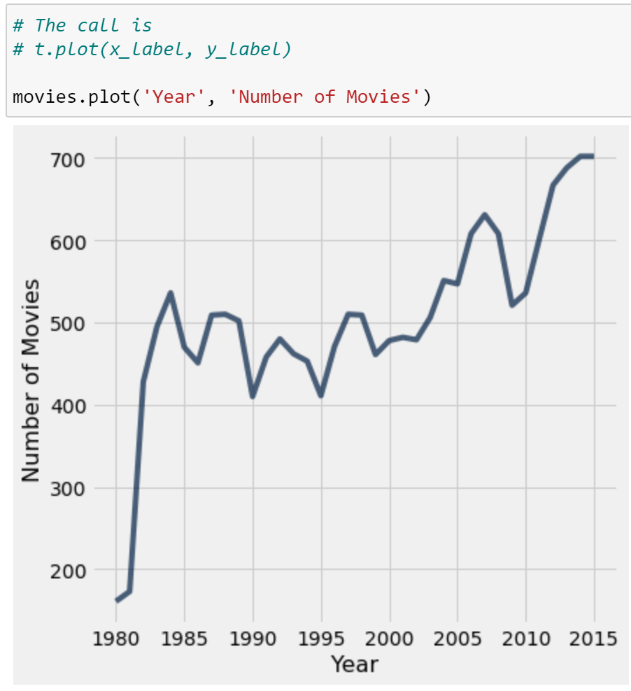
Histogram
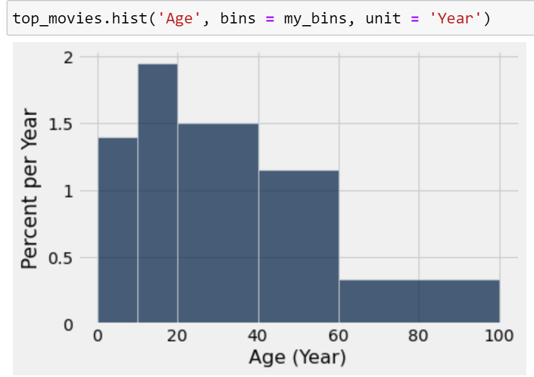
7.2 Goals of Visualization
Visualizations are useful for a number of reasons. In Data 100, we consider two areas in particular:
To broaden your understanding of the data
Key part in exploratory data analysis.
Useful in investigating relationships between variables.
To communicate results/conclusions to others
Visualization theory is especially important here.
One of the most common applications of visualizations is in understanding a distribution of data.
7.3 An Overview of Distributions
A distribution describes the frequency of unique values in a variable. Distributions must satisfy two properties:
Each data point must belong to only one category.
The total frequency of all categories must sum to 100%. In other words, their total count should equal the number of values in consideration.
Not a Valid Distribution
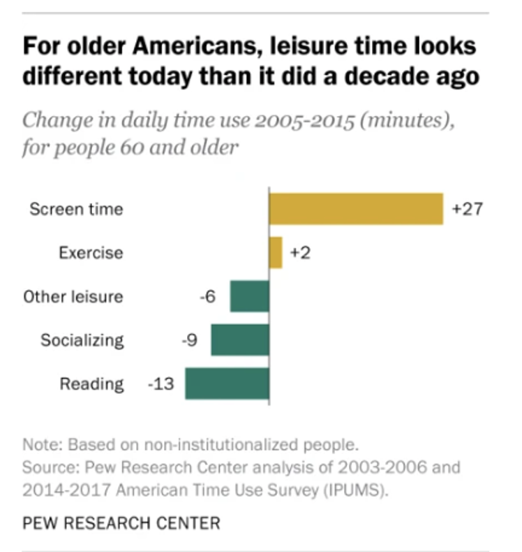
Valid Distribution
Left Diagram: This is not a valid distribution since individuals can be associated to more than one category and the bar values demonstrate values in minutes and not probability
Right Diagram: This example satisfies the two properties of distributions, so it is a valid distribution.
7.4 Bar Plots
As we saw above, a bar plot is one of the most common ways of displaying the distribution of a qualitative (categorical) variable. The length of a bar plot encodes the frequency of a category; the width encodes no useful information.
Let’s contextualize this in an example. We will use the familiar births dataset from Data 8 in our analysis.
Code
import pandas as pdbirths = pd.read_csv("data/baby.csv")births.head(5)
Birth Weight
Gestational Days
Maternal Age
Maternal Height
Maternal Pregnancy Weight
Maternal Smoker
0
120
284
27
62
100
False
1
113
282
33
64
135
False
2
128
279
28
64
115
True
3
108
282
23
67
125
True
4
136
286
25
62
93
False
We can visualize the distribution of the Maternal Smoker column using a bar plot. There are a few ways to do this.
Recall that .value_counts() returns a Series with the total count of each unique value. We call .plot(kind = 'bar') on this result to visualize these counts as a bar plot.
Plotting methods in pandas are the least preferred and not supported in Data 100, as their functionality is limited. Instead, future examples will focus on other libaries built specifically for visualizing data. The most well-known library here is matplotlib.
7.4.2 Plotting in Matplotlib
import matplotlib.pyplot as pltms = births['Maternal Smoker'].value_counts()plt.bar(ms.index.astype('string'), ms)plt.xlabel('Maternal Smoker')plt.ylabel('Count');
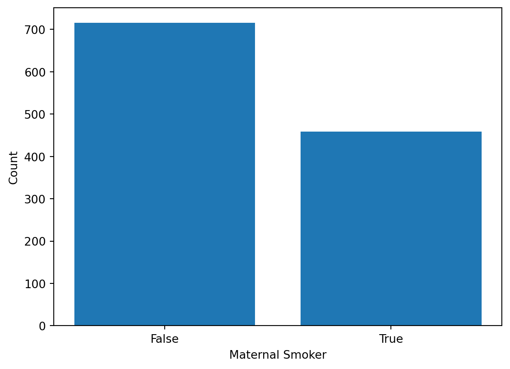
While more code is required to achieve the same result, matplotlib is often used over pandas for its ability to plot more complex visualizations, some of which are discussed shortly.
However, notice how we need to explicitly specify the type of the value for the x-axis to string. In absence of conversion, the x-axis will be a range of integers rather than the two categories, True and False. This is because matplotlib coerces True to a value of 1 and False to 0. Also, note how we needed to label the axes with plt.xlabel and plt.ylabel - matplotlib does not support automatic axis labeling. To get around these inconveniences, we can use a more effecient plotting library, seaborn.
7.4.3 Plotting in Seaborn
import seaborn as snssns.countplot(data = births, x ='Maternal Smoker');
seaborn.countplot both counts and visualizes the number of unique values in a given column. This column is specified by the x argument to sns.countplot, while the DataFrame is specified by the data argument.
For the vast majority of visualizations, seaborn is far more concise and aesthetically pleasing than matplotlib. However, the color scheme of this particular bar plot is abritrary - it encodes no additional information about the categories themselves. This is not always true; color may signify meaningful detail in other visualizations. We’ll explore this more in-depth during the next lecture.
7.4.4 Plotting in Plotly
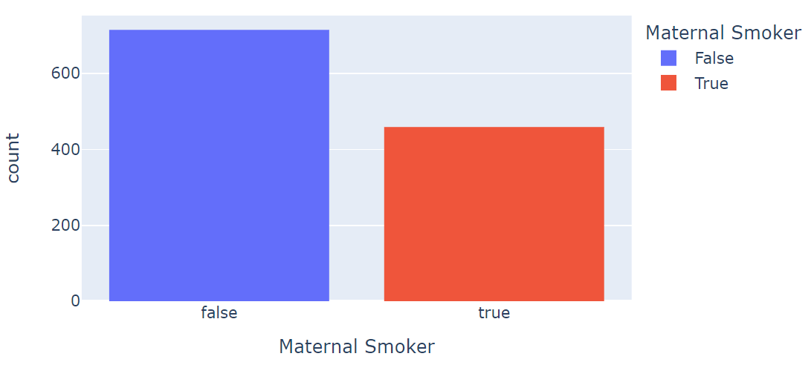
plotly is one of the most versatile plottling libraries and widely used in industry. However, plotly has various dependencies that make it difficult to support in Data 100. Therfore, we have intentionally excluded the code to generate the plot above.
By now, you’ll have noticed that each of these plotting libraries have a very different syntax. As with pandas, we’ll teach you the important methods in matplotlib and seaborn, but you’ll learn more through documentation.
To accomplish goal 2, here are some ways we can improve plot:
Introducing different colors for each bar
Including a legend
Including a title
Labeling the y-axis
Using color-blind friendly palettes
Re-orienting the labels
Increase the font size
7.5 Histograms
Histograms are a natural extension to bar plots; they visualize the distribution of quantitative (numerical) data.
Revisiting our example with the births DataFrame, let’s plot the distribution of the Maternal Pregnancy Weight column.
Code
births.head(5)
Birth Weight
Gestational Days
Maternal Age
Maternal Height
Maternal Pregnancy Weight
Maternal Smoker
0
120
284
27
62
100
False
1
113
282
33
64
135
False
2
128
279
28
64
115
True
3
108
282
23
67
125
True
4
136
286
25
62
93
False
How should we define our categories for this variable? In the previous example, these were the unique values of the Maternal Smoker column: True and False. If we use similar logic here, our categories are the different numerical weights contained in the Maternal Pregnancy Weight column.
Under this assumption, let’s plot this distribution using the seaborn.countplot function.
sns.countplot(data = births, x ='Maternal Pregnancy Weight');
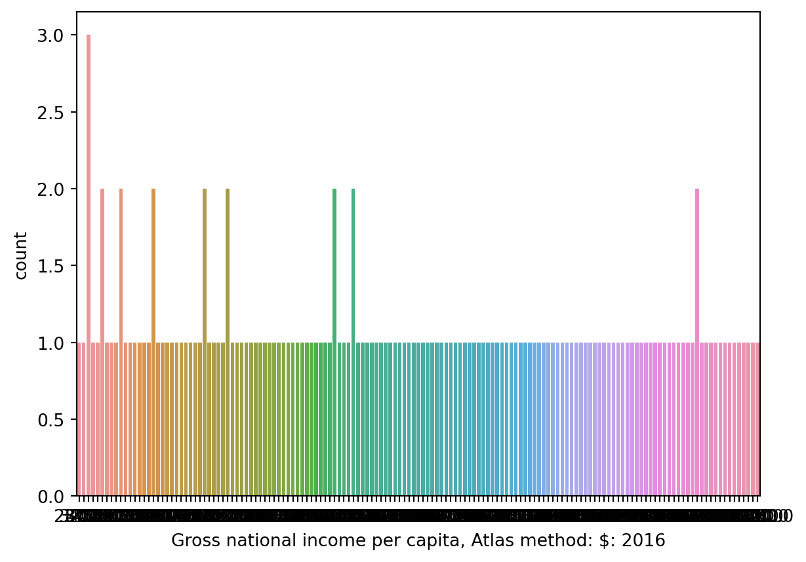
This histogram clearly suffers from overplotting. This is somewhat expected for Maternal Pregnancy Weight - it is a quantitative variable that takes on a wide range of values.
To combat this problem, statisticians use bins to categorize numerical data. Luckily, seaborn provides a helpful plotting function that automatically bins our data.
sns.histplot(data = births, x ='Maternal Pregnancy Weight');
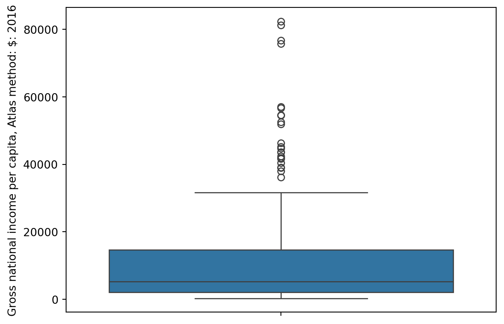
This diagram is known as a histogram. While it looks more reasonable, notice how we lose fine-grain information on the distribution of data contained within each bin. We can introduce rug plots to minimize this information loss. An overlaid “rug plot” displays the within-bin distribution of our data, as denoted by the thickness of the colored line on the x-axis.
sns.histplot(data = births, x ='Maternal Pregnancy Weight');sns.rugplot(data = births, x ='Maternal Pregnancy Weight', color ='red');
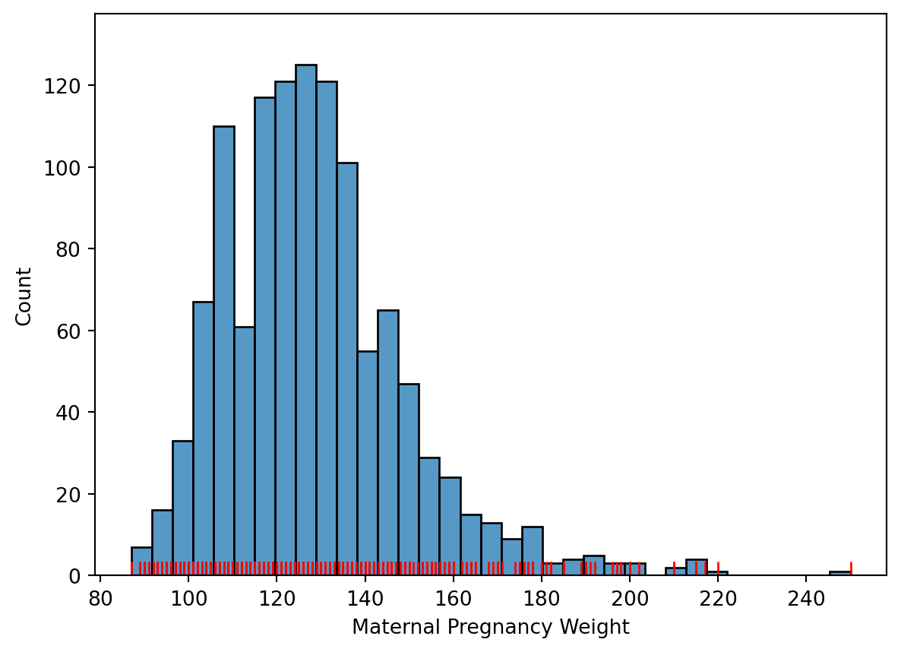
You may have seen histograms drawn differently - perhaps with an overlaid density curve and normalized y-axis. We can display both with a few tweaks to our code.
To visualize a density curve, we can set the the kde = True argument of the sns.histplot. Setting the argument stat = 'density' normalizes our histogram and displays densities, instead of counts, on the y-axis. You’ll notice that the area under the density curve is 1.
sns.histplot(data = births, x ='Maternal Pregnancy Weight', kde =True, stat ='density')sns.rugplot(data = births, x ='Maternal Pregnancy Weight', color ='red');
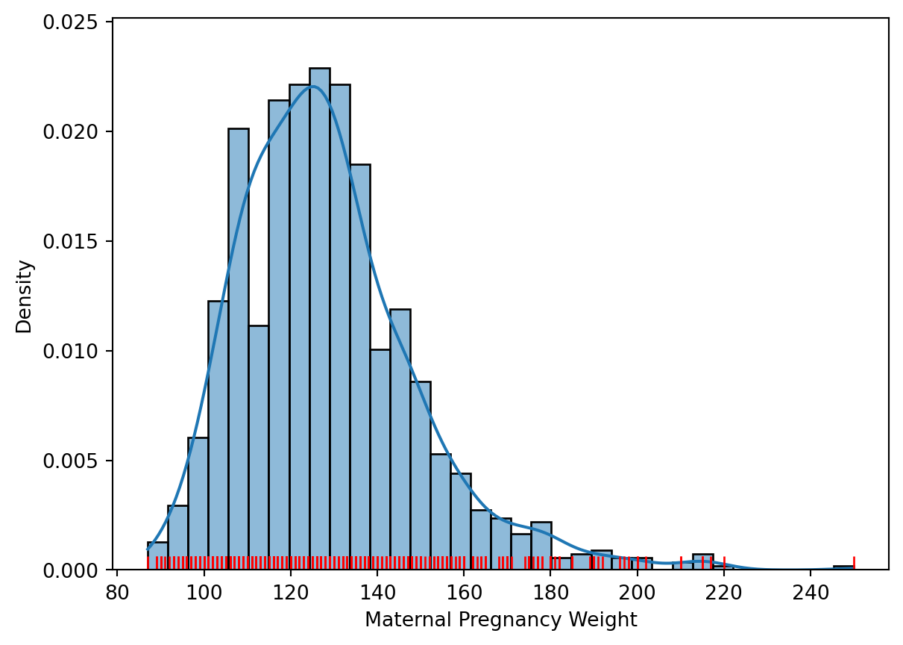
7.6 Evaluating Histograms
Histograms allow us to assess a distribution by their shape. There are a few properties of histograms we can analyze:
Skewness and Tails
Skewed left vs skewed right
Left tail vs right tail
Outliers
Defined arbitrarily for now
Modes
Most commonly occuring data
7.6.1 Skewness and Tails
If a distribution has a long right tail (such as Maternal Pregancy Weight), it is skewed right. In a right-skewed distribution, the few large outliers “pull” the mean to the right of the median.
If a distribution has a long left tail, it is skewed left. In a left-skewed distribution, the few small outliers “pull” the mean to the left of the median.
In the case where a distribution has equal-sized right and left tails, it is symmetric. The mean is approximately equal to the median. Think of mean as the balancing point of the distribution
import numpy as npsns.histplot(data = births, x ='Maternal Pregnancy Weight');df_mean = np.mean(births['Maternal Pregnancy Weight'])df_median = np.median(births['Maternal Pregnancy Weight'])print("The mean is: {} and the median is {}".format(df_mean,df_median))
The mean is: 128.4787052810903 and the median is 125.0
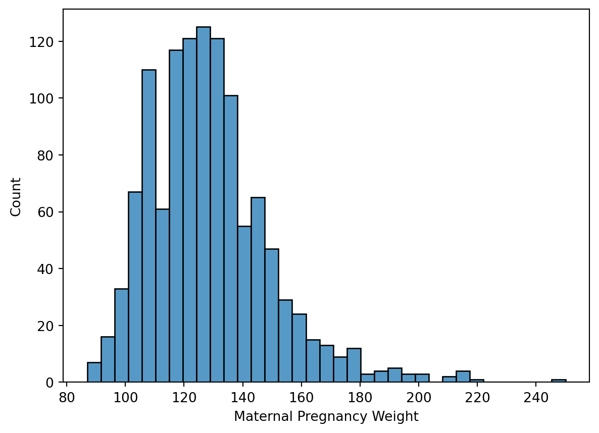
7.6.2 Outliers
Loosely speaking, an outlier is defined as a data point that lies an abnormally large distance away from other values. We’ll define the statistical measure for this shortly.
Outliers disproportionately influce the mean because their magnitude is directly involved in computing the average. However, the median is largely unaffected - the magnitude of an outlier is irrelevant; we only care that it is some non-zero distance away from the midpoint of the data.
sns.histplot(data = births, x ='Maternal Pregnancy Weight');## Where do we draw the line of outlier? plt.axvline(df_mean*1.75, color ='red');
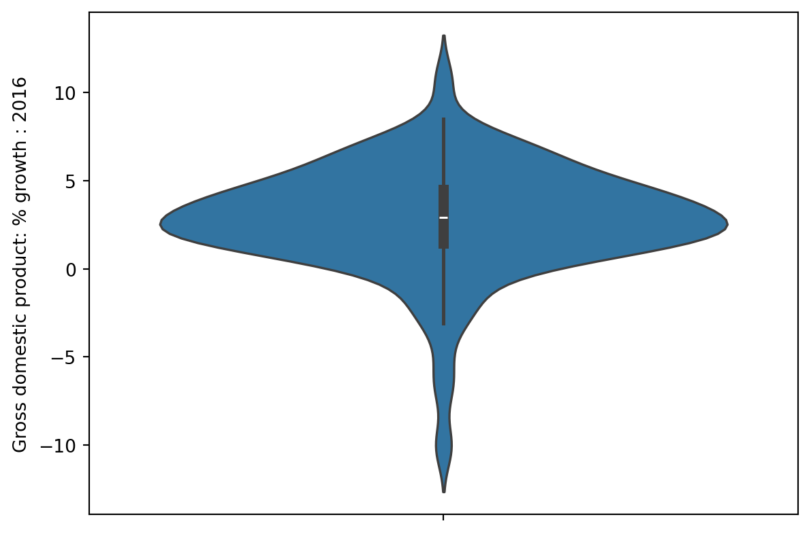
7.6.3 Modes
A mode of a distribution is a local or global maximum. A distribution with a single clear maximum is unimodal, distributions with two modes are bimodal, and those with 3 or more are multimodal. You need to distinguish between modes and random noise.
For example, the distribution of birth weights for maternal smokers is (weakly) multimodal.
However, changing the bins reveals that the data is not bi-modal.
sns.histplot(data = births_maternal_non_smoker, x ='Maternal Pregnancy Weight',\ bins =20);
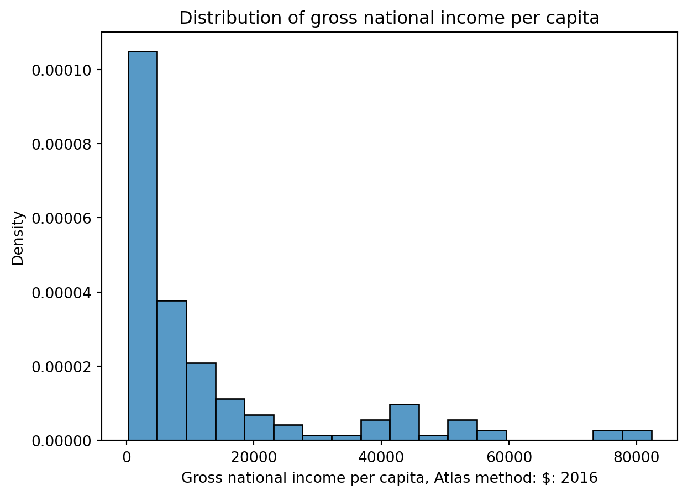
7.7 Density Curves
Instead of a discrete histogram, we can visualize what a continuous distribution corresponding to that same data could look like using a curve. - The smooth curve drawn on top of the histogram here is called a density curve.
In lecture 8, we will study how exactly to compute these density curves (using a technique is called Kernel Density Estimation).
If we plot birth weights of babies of smoking mothers, we get a histogram that appears bimodal.
Density curve reinforces belief in this bimodality.
However, if we plot birth weights of babies of non-smoking mothers, we get a histogram that appears unimodal.
From a goal 1 perspective, this is EDA which tells us there may be something interesting here worth pursuing.
Deeper analysis necessary!
If we found something truly interesting, we’d have to cautiously write up an argument and create goal 2 level visualizations.
births_non_maternal_smoker = births[births['Maternal Smoker'] ==False]births_maternal_smoker = births[births['Maternal Smoker'] ==True]sns.histplot(data = births_maternal_smoker , x ='Birth Weight',\ kde =True);
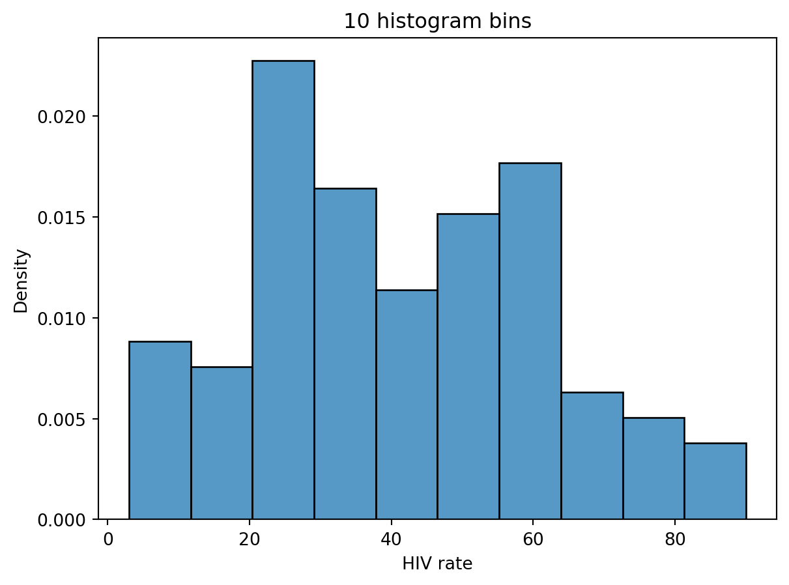
sns.histplot(data = births_non_maternal_smoker , x ='Birth Weight',\ kde =True);
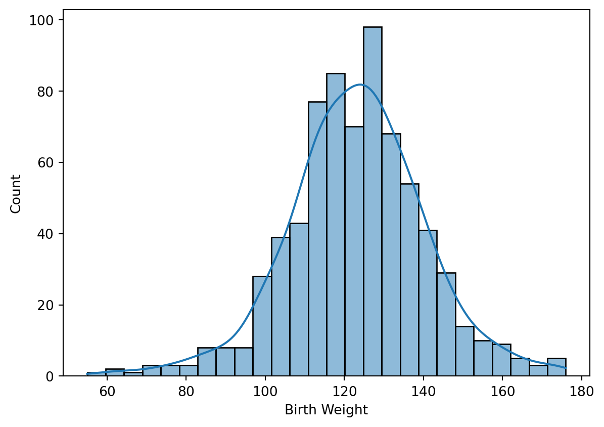
7.7.1 Histograms and Density
Rather than labeling by counts, we can instead plot the density, as shown below. Density gives us a measure that is invariant to the total number of observed units. The numerical values on the Y-axis for a sample of 100 units would be the same for when we observe a sample of 10000 units instead. We can still calculate the absolute number of observed units using density.
Example: There are 1174 observations total. - Total area of this bin should be: 120/1174 = ~10% - Density of this bin is therefore: 10% / (115 - 110) = 0.02
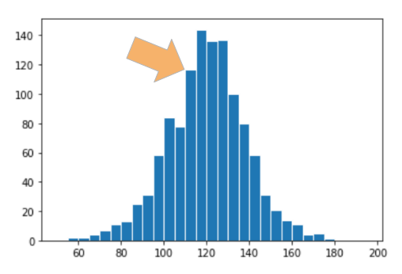
7.8 Box Plots and Violin Plots
7.8.1 Boxplots
Boxplots are an alternative to histograms that visualize numerical distributions. They are especially useful in graphicaly summarizing several characteristics of a distribution. These include:
Lower Quartile (\(1^{st}\) Quartile)
Median (\(2^{nd}\) Quartile)
Upper Quartile (\(3^{rd}\) Quartile)
Interquartile Range (IQR)
Whiskers
Outliers
The lower quartile, median, and uper quartile are the \(25^{th}\), \(50^{th}\), and \(75^{th}\) percentiles of data, respectively. The interquartile range measures the spread of the middle \(50\)% of the distribution, calculated as the (\(3^{rd}\) Quartile \(-\)\(1^{st}\) Quartile).
The whiskers of a box-plot are the two points that lie at the [\(1^{st}\) Quartile \(-\) (\(1.5\times\) IQR)], and the [\(3^{rd}\) Quartile \(+\) (\(1.5\times\) IQR)]. They are the lower and upper ranges of “normal” data (the points excluding outliers). Subsequently, the outliers are the data points that fall beyond the whiskers, or further than (\(1.5 \times\) IQR) from the extreme quartiles.
Let’s visualize a box-plot of the Birth Weight column.
Code
sns.boxplot(data = births, y ='Birth Weight');bweights = births['Birth Weight']q1 = np.percentile(bweights, 25)q2 = np.percentile(bweights, 50)q3 = np.percentile(bweights, 75)iqr = q3 - q1whisk1 = q1 - (1.5* iqr)whisk2 = q3 + (1.5* iqr)print("The first quartile is {}".format(q1))print("The second quartile is {}".format(q2))print("The third quartile is {}".format(q3))print("The interquartile range is {}".format(iqr))print("The whiskers are {} and {}".format(whisk1, whisk2))
The first quartile is 108.0
The second quartile is 120.0
The third quartile is 131.0
The interquartile range is 23.0
The whiskers are 73.5 and 165.5
Here is a helpful visual that summarizes our discussion above.
7.8.2 Violin Plots
Another diagram that is useful in visualizing a variable’s distribution is the violin plot. A violin plot supplements a box-plot with a smoothed density curve on either side of the plot. These density curves highlight the relative frequency of variable’s possible values. If you look closely, you’ll be able to discern the quartiles, whiskers, and other hallmark features of the box-plot.
sns.violinplot(data = births, y ='Birth Weight');
7.9 Comparing Quantitative Distributions
Earlier in our discussion of the mode, we visualized two histograms that described the distribution of birth weights for maternal smokers and non-smokers. However, comparing these histograms was difficult because they were displayed on seperate plots. Can we overlay the two to tell a more compelling story?
In seaborn, multiple calls to a plotting library in the same code cell will overlay the plots. For example:
births_maternal_smoker = births[births['Maternal Smoker'] ==False]births_non_maternal_smoker = births[births['Maternal Smoker'] ==True]sns.histplot(data = births_maternal_smoker, x ='Birth Weight', color ='orange', label ='smoker')sns.histplot(data = births_non_maternal_smoker, x ='Birth Weight', color ='blue', label ='nonsmoker')plt.legend();
However, notice how this diagram suffers from overplotting. We can fix this with a call to sns.kdeplot. This will remove the bins and overlay the histogram with a density curve that better summarizes the distribution.
sns.kdeplot(data = births_maternal_smoker, x ='Birth Weight', color ='orange', label ='smoker')sns.kdeplot(data = births_non_maternal_smoker, x ='Birth Weight', color ='blue', label ='nonsmoker')plt.legend();
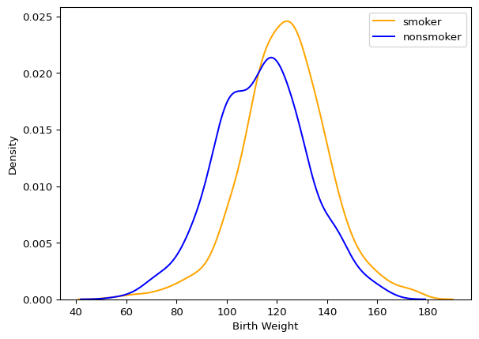
Unfortunately, we lose critical information in our distribution by removing small details. Therefore, we typically prefer to use box-plots and violin plots when comparing distributions. These are more concise and allow us to compare summary statistics across many distributions.
sns.violinplot(data = births, x ='Maternal Smoker', y ='Birth Weight');
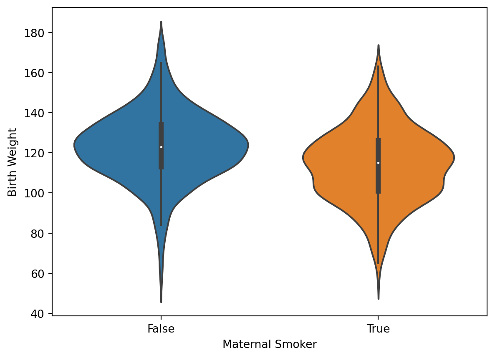
sns.boxplot(data=births, x ='Maternal Smoker', y ='Birth Weight');
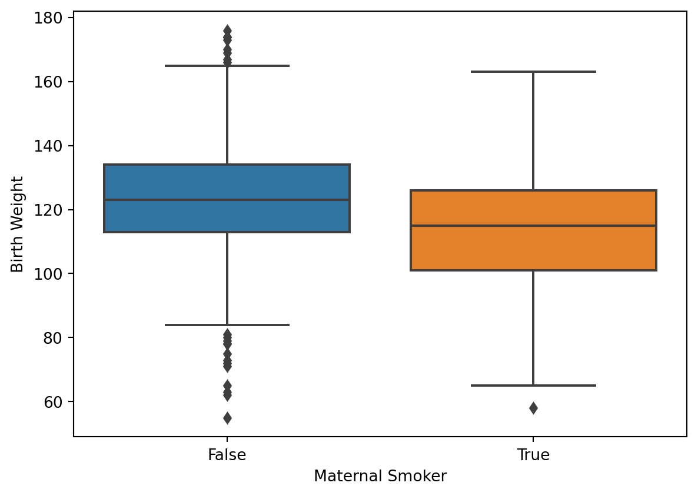
7.10 Ridge Plots
Ridge plots show many density curves offset from one another with minimal overlap. They are useful when the specific shape of each curve is important.